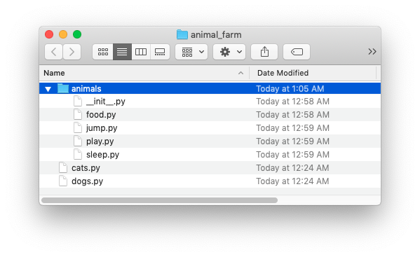

Lecture 2
New Python Tricks

The Zen of Python
20 guiding principles about Python
>>> import this
The Zen of Python, by Tim Peters
Beautiful is better than ugly.
Explicit is better than implicit.
Simple is better than complex.
Complex is better than complicated.

Flat is better than nested.
Sparse is better than dense.
Readability counts.

Special cases aren't special
enough to break the rules.
...Although practicality beats purity.
Errors should never pass silently.
...Unless explicitly silenced.

In the face of ambiguity, refuse the temptation to guess.
There should be one—and preferably only one—obvious way to do it.
...Although that way may not be obvious at first unless you're Dutch.
Now is better than never.
Although never is often better than right now.
If the implementation is hard to
explain, it's a bad idea.
If the implementation is easy to
explain, it may be a good idea.
Namespaces are one honking great
idea—let's do more of those!
In summary:
- Readability and clarity matters.
- Strive keep things as simple as they can be.
- Be explicit about what you're doing. Ambiguity is to be avoided.
- Working code beats what's in your head
- ...but if you should be able to explain what you're doing to someone else clearly
- ...and sometimes you have to step away and reset.
What questions do you have?
Announcements
- Questions about Python Coding Standards, the Syllabus or anything else?
- Assignment #1 is out tomorrow (Wednesday, 09/02)
- Installfest this Thursday! Have your computer ready.
Lists and dictionaries are useful, but there are some other data structures that will come in handy too...
Two more data structures:
Tuples
- Tuples are sequences of values. They are iterable.
my_tuple = (1, 2, 3, 4, 5)- Immutable (unlike lists), but otherwise act the same
- Heterogeneous types are OK:
("A", 55, True) - Less memory (and sometimes) faster than lists.
- One-item tuples are a little weird:
(1, )
Sets
- Same concept as a mathematical set.
- They are iterable, but not ordered.
my_set = {1, 2, 3}- ...or:
my_set = set([1, 2, 3]) - Heterogeneous types are OK:
{"A", 55, True} - They are mutable.
- Provide a much faster answer to "is this thing in that sequence?" than tuples or lists.
| Operation | Symbol | Syntax | Alternative Syntax |
|---|---|---|---|
| union | A ∪ B | A | B |
A.union(B) |
| intersection | A ∩ B, | A & B |
A.intersection(B) |
| difference | A \ B | A - B |
A.difference(B) |
| symmetric difference | A ⊖ B | A ^ B |
A.symmetric_difference(B) |
| super set | A ⊇ B | A >= B |
A.issuperset(B) |
Sometimes you want to put variables inside of strings:
name = "John Doe"
age = 99
I want to print out a message like: "Hello my name is John Doe and I am 99 years old."
name = "John Doe"
age = 99
print("Hello my name is " + name + " and I am " + str(age) + " years old.")
Don't do it this way.
f-strings to the rescue!
name = "John Doe"
age = 99
print(f"Hello my name is {name} and I am {age} years old.")
The format() method can be useful for more complex cases:
cost = 1200.48
tax = 0.085
message = "Cost ${total:,} with tax, which is {tax}%".format(
total=round(cost * (tax + 1), 2),
tax=tax * 100
)
# The value of message is:
# 'This items costs $1,296.52 with tax, which is 8.5%'
Python Modules
Execution model:
# cats.py
def feed(name, oz, kind):
print(f"{name} has been fed {oz} ounces of {kind}.")
def change_litter():
print("Litter box is changed.")
feed("Percy", 4, "Lil' Bits")
change_litter()
What is happening when we do this?
python cats.py

# dogs.py
def feed(name, oz, kind):
print(f"{name} has been fed {oz} ounces of {kind}.")
def walk():
print("Let's go for a walk!")
feed("Teddy", 8, "Ol' Stinky")
walk()
python dogs.py
>>> import dogs

# animals.py
def feed(name, oz, kind):
print(f"$name has been fed $oz ounces of $kind.")

# dogs.py
from animals import feed
def walk():
print("Let's go for a walk!")
feed("Teddy", 8, "Ol' Stinky")
walk()
# cats.py
from animals import feed
def change_litter():
print("Litter box is changed.")
feed("Percy", 4, "Lil' Bits")
change_litter()
Importing has side effects:
>>> import cats
Percy has been fed 4 ounces of Lil' Bits
Litter box is changed.
# dogs.py
from animals import feed
def walk():
print("Let's go for a walk!")
if __name__ == "__main__":
feed("Teddy", 8, "Ol' Stinky")
walk()
# cats.py
from animals import feed
def change_litter():
print("Litter box is changed.")
if __name__ == "__main__":
feed("Percy", 4, "Lil' Bits")
change_litter()
python dogs.py
Teddy has been fed 8 ounces of Ol' Stinky
Let's go for a walk!
>>> import dogs
Submodules
Importing submodules:
# dogs.py
from animals.food import feed
from animals.sleep import short_nap
def walk():
print("Let's go for a walk!")
if __name__ == "__main__":
feed("Teddy", 8, "Ol' Stinky")
walk()
short_nap()
Alternative import:
# dogs.py
from animals import food, sleep
def walk():
print("Let's go for a walk!")
if __name__ == "__main__":
food.feed("Teddy", 8, "Ol' Stinky")
walk()
sleep.short_nap()
from animals import food
food.feed("Percy", 4, "Lil' Bits")
Modules are actually kind of like dictionaries, but with different syntax. Instead of food["feed"] you do food.feed.
Avoid circular imports!
# cats.py
from animals import food
# animals.py
from cats import change_litter
Why modules?
- Break up huge files into smaller ones that are easier to deal with
- Organize our program into functional units
- Encourage reusability
- Create libraries